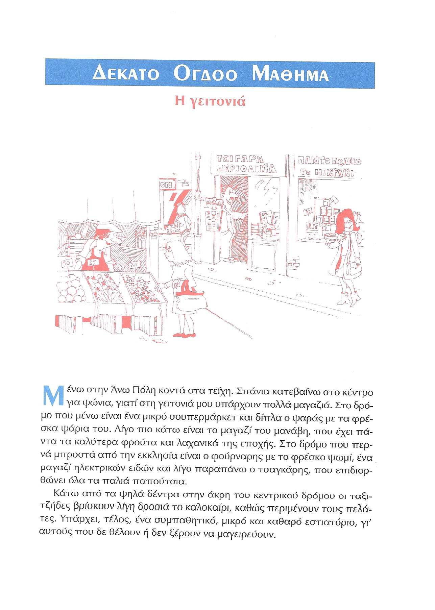
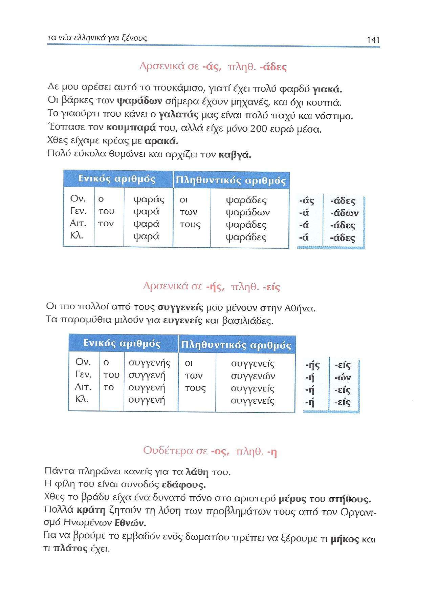
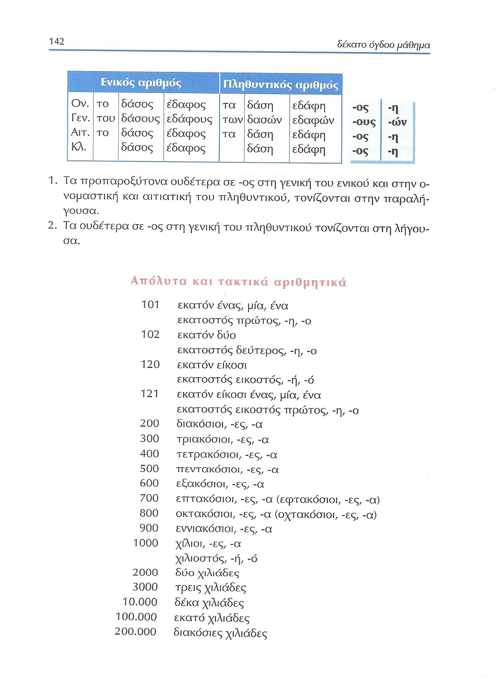
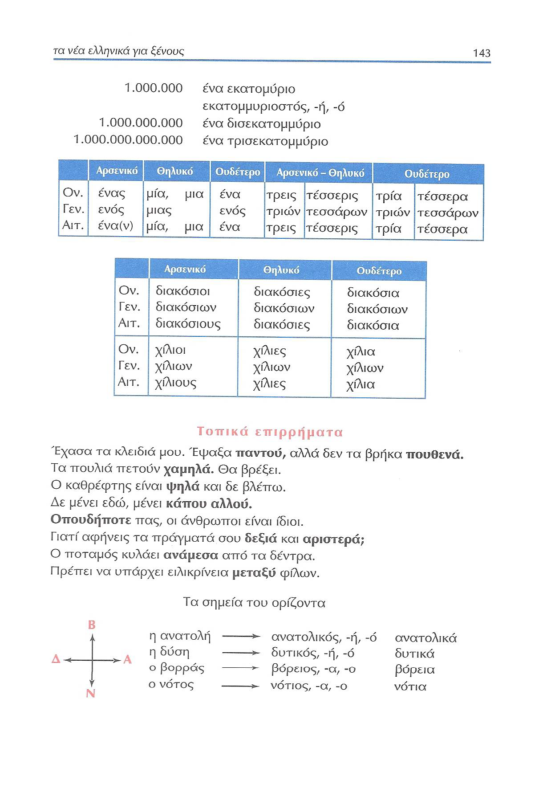
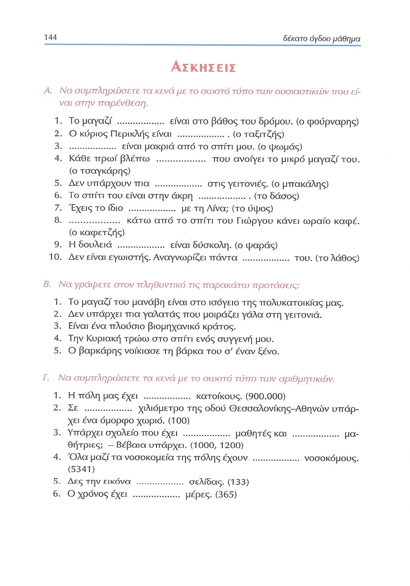
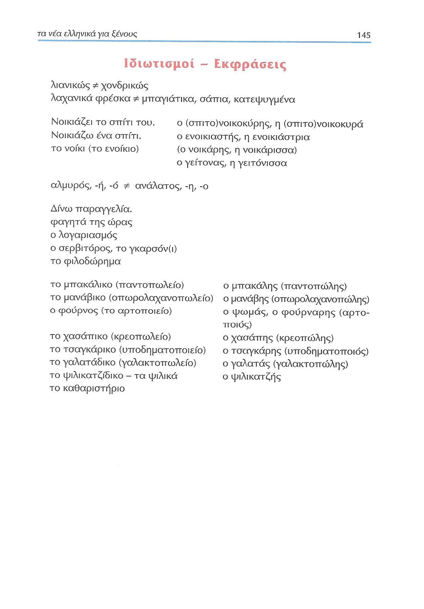

Lección 18¶
139 'Η γειτονιά'¶

Η γειτονιά
Μένω στην Άνω Πόλη κοντά στα τείχη. Σπάνια κατεβαίνω στο κέντρο για ψώνια, γιατί στη γειτονιά μου υπάρχουν πολλά μαγαζιά. Στο δρόμο που μένω είναι ένα μικρό σουπερμάρκετ και διπλα ο ψαράς με τα φρέσκα ψάρια του. Λίγο πιο κάτω είναι το μαγαζί του μανάβη, που έχει πάντα τα καλύτερα φρούτα και λαχανικά της εποχής. Στο δρόμο που περνά μπροστά από την εκκλησία είναι ο φούρναρης με το φρέσκο ψωμί, ένα μαγαζί ηλεκτρικών ειδών και λίγο παραπάνω ο τσαγκάρης, που επιδιορθώνει όλα τα παλιά παπούτσια.
Κάτω από τα ψηλά δέντρα στην άκρη του κεντρικού δρόμου οι ταξιτζήδες βρίσκουν λίγη δροσιά το καλοκαίρι, καθώς περιμένουν τους πελάτες. Υπάρχει, τέλος, ένα συμπαθητικό, μικρό και καθαρό εστιατόριο, γι' αυτούς που δε θέλουν ή δεν ξέρουν να μαγειρεύουν.
Ηχογράφηση & κέιμενο¶
| Δέκατο όγδοο μάθημα: η γειτονιά | |
| Μένω στην Άνω Πόλη κοντά στα τείχη. | |
| Σπάνια κατεβαίνω στο κέντρο για ψώνια, γιατί στη γειτονιά μου υπάρχουν πολλά μαγαζιά. | |
| Στο δρόμο που μένω είναι ένα μικρό σουπερμάρκετ και διπλα ο ψαράς με τα φρέσκα ψάρια του. | |
| Λίγο πιο κάτω είναι το μαγαζί του μανάβη, που έχει πάντα τα καλύτερα φρούτα και λαχανικά της εποχής. | |
| Στο δρόμο που περνά μπροστά από την εκκλησία είναι ο φούρναρης με το φρέσκο ψωμί, ένα μαγαζί ηλεκτρικών ειδών και λίγο παραπάνω ο τσαγκάρης, που επιδιορθώνει όλα τα παλιά παπούτσια. | |
| Κάτω από τα ψηλά δέντρα στην άκρη του κεντρικού δρόμου οι ταξιτζήδες βρίσκουν λίγη δροσιά το καλοκαίρι, καθώς περιμένουν τους πελάτες. | |
| Υπάρχει, τέλος, ένα συμπαθητικό, μικρό και καθαρό εστιατόριο, γι' αυτούς που δε θέλουν ή δεν ξέρουν να μαγειρεύουν. |
140 'Στο εστιατόριο'¶
| Ολώκληρος διάλογος | |
| ... | |
| Α — ... | |
| Β — ... | |
| Α — ... | |
| Β — ... | |
| Α — ... | |
| Β — ... | |
| Α — ... | |
| Β — ... | |
| Α — ... | |
| Β — ... | |
| Α — ... |
?Ολώκληρος διάλογος | |
?Στο εστιατόριο | |
?Α — Παρακαλώ, μία μοσχαράκι με σπανάκι. | |
?Β —Λυπάμαι, κύριε, τελείωσε. | |
?Α —Τότε φέρτε μου μία... | |
?Β —Ξέρετε, πολλά από τα φαγητά που γράφει ο κατάλογος τελείωσαν, γιατί είναι περασμένη η ώρα. | |
?Α —Ωραία. Πέστε μου εσείς τι υπάρχει. | |
?Β —Μόνο μοσχάρι με μακαρόνια και κοτόπουλο με πατάτες. | |
?Α —Εντάξει. Θέλω κοτόπουλο, στήθος αν υπάρχει, μια χωριάτικη σαλάτα, μια φέτα και μια μικρή μπίρα. | |
?Β —Έρχονται αμέσως. | |
?Α —Παρακαλώ, πού είναι η τουαλέτα; | |
?Β —Στο βάθος δεξιά. | |
?Α —Ευχαριστώ πολύ. |
| Ολώκληρος διάλογος | |
| Στο εστιατόριο | |
| Α — Παρακαλώ, μία μοσχαράκι με σπανάκι. | |
| Β —Λυπάμαι, κύριε, τελείωσε. | |
| Α —Τότε φέρτε μου μία... | |
| Β —Ξέρετε, πολλά από τα φαγητά που γράφει ο κατάλογος τελείωσαν, γιατί είναι περασμένη η ώρα. | |
| Α —Ωραία. Πέστε μου εσείς τι υπάρχει. | |
| Β —Μόνο μοσχάρι με μακαρόνια και κοτόπουλο με πατάτες. | |
| Α —Εντάξει. Θέλω κοτόπουλο, στήθος αν υπάρχει, μια χωριάτικη σαλάτα, μια φέτα και μια μικρή μπίρα. | |
| Β —Έρχονται αμέσως. | |
| Α —Παρακαλώ, πού είναι η τουαλέτα; | |
| Β —Στο βάθος δεξιά. | |
| Α —Ευχαριστώ πολύ. |
140 -ής -ήδες¶
Αρσενικά σε -ης, πληθ. -ηδες
- — Έφυγαν οι μουσαφίρήδες που είχες στο σπίτι σου; — Ναι, προχθές.
- Η αστυνομία ελέγχει τις ζυγαριές των μανάβηδων και των χασάπηδων.
- Ο σπιτονοικοκύρης μου μου είπε ότι θέλει κι άλλη αύξηση στο νοίκι.
- Τι το κρατάς αυτό το ρολόι; Ούτε παλιατζής δεν το παίρνει.
| Αριθμός | Πτώση | Άρθρο | Ουσιαστικό | Ουσιαστικό | Επίθημα |
|---|---|---|---|---|---|
| Ενικός | Ονομαστική | ο | μανάβης | καφετζής | -ης |
| Γενική | του | μανάβη | καφετζή | -η | |
| Αιτιατική | τον | μανάβη | καφετζή | -η | |
| Κλητική | μανάβη | καφετζή | -η | ||
| Πληθυντικός | Ονομαστική | οι | μανάβηδες | καφετζήδες | -ηδες |
| Γενική | των | μανάβηδων | καφετζήδων | -ηδων | |
| Αιτιατική | τους | μανάβηδες | καφετζήδες | -ηδες | |
| Κλητική | μανάβηδες | καφετζήδες | -ηδες |
{kind=link}
141 -άς -άδες¶
| Αριθμός | Πτώση | Άρθρο | Ουσιαστικό | Επίθημα |
|---|---|---|---|---|
| Ενικός | Ονομαστική | ο | ψαράς | -άς |
| Γενική | του | ψαρά | -ά | |
| Αιτιατική | τον | ψαρά | -ά | |
| Κλητική | ψαρά | -ά | ||
| Πληθυντικός | Ονομαστική | οι | ψαράδες | -άδες |
| Γενική | των | ψαράδων | -άδων | |
| Αιτιατική | τους | ψαράδες | -άδες | |
| Κλητική | ψαράδες | -άδες |
141 -ής -είς¶
141 ουδέτερα -ος -η¶

142 Απόλυτα και τακτικά αριθμητικά¶

143 Απόλυτα και τακτικά αριθμητικά/τοπικά επιρρήματα¶

144 Ασκήσεις Α-Γ¶

145 Ιδιωτισμοί-Εκφράσεις¶
